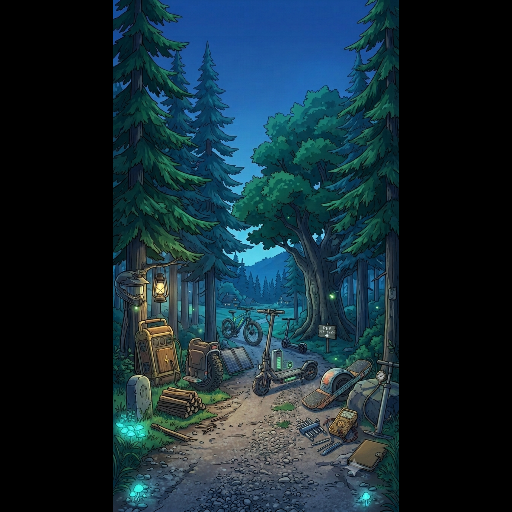

Universal Avionics for Personal Electric Vehicles
Built for riders on rural backroads, trails, and highways. Rural ERides GO unites a Zero-Crash Studio 3D PBR Rig Lab, an 11-Window Telemetry Studio & Ride Inspector, 9-DOF AHRS Telemetry, Privacy-First Rider Radar, and Gemini AI Vision Diagnostics—powered 100% by live sensors and cloud services.

Rural ERides GO • Build 51
Explore Every Core Subsystem in v51.0
Select any subsystem below to inspect how Rural ERides GO powers real rides from trailhead to workbench.
Exact Voltage, Sag & Archetype Support
Live resting OCV and under-load voltage sag calculations calibrated across NMC and LiFePO4 battery packs from 36V to 134V.
Fat-Tire e-Bikes, commuter cruisers, and trail rigs. Cutoff 39.0V, storage 49.4V.
Dual-motor scooters and high-torque rural e-bikes. Cutoff 42.0V, storage 53.2V.
Sur-Ron Ultra Bee eMotos & Hyper-Scooters. Live sag alerts under heavy climb amps.
High-voltage Electric Unicycles with PWM headroom warnings & Wh/mi range learning.
26+ Visual Themes & 11 Ornamented Holiday Themes
Every Holiday theme renders DP-scaled top-of-screen garlands, glowing twinkling string lights, hanging ornaments, full-screen backdrop motifs, foreground card corner emblems, and festive navigation bar trim—available year-round in Settings.
What's New in Rural ERides GO
v51.0 (Build 51) — Direct Repo Build Notifications & Play-Compliant Update Center
CURRENTNew-build notifications now open the GitHub repository release page directly in your browser with zero restricted install permissions (100% Google Play Creator Program compliant), backed by automatic background WorkManager checks, Settings -> App Updates & New Builds controls, the zero-crash Studio 3D PBR Rig Lab, non-overlapping layouts, and restored Google Sign-In default.
v36.0–v43.0 — Compartmentalized Architecture, Voice Studio & Multi-Engine 3D
Isolated Cockpit, Radar, Mechanic, Co-Pilot, Community, 3D CAD Lab, and Telemetry Studio compartments; added Custom Synthesized AI Voice Studio, zero-latency streaming TTS buffer, and Gravel Volt 3D Runner.
v14.0–v21.0 — Rural Heritage, Live "Bench Eyes" Camera, Ride Analytics & Optical Morse
Added CameraX workbench visual inspection, 14 switchable Cockpit HUD skins, RainViewer Doppler storm radar, zero-trust Firestore sync, and optical flashlight/camera Morse transceiver.
Ready to Ride?
Download the latest Android release directly from GitHub Releases or clone the repository to build locally with Gradle and your Firebase configuration.